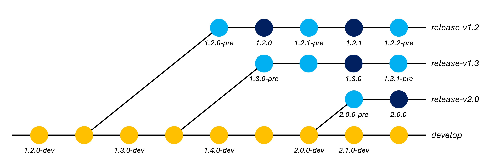

Release procedure
Background
Release branches
Development of ISCE3 follows a forking
workflow,
with developers merging changes from their forks into the default (develop) branch of
the upstream repository.
From time to time, the team makes versioned releases of ISCE3. Major and minor releases may include changes to existing interfaces and/or new features. Patch releases contain bug fixes that have been back-ported to old versions of the software, without interface changes.
In preparation for major or minor software releases (usually 2-3 weeks before the release date), the ISCE3 team conducts a "feature freeze" wherein development of new features is temporarily paused -- only bug fixes should be merged during this time. There is typically no feature freeze period for patch releases.
In order to facilitate back-porting bug fixes, and to avoid delaying development toward
future releases during the feature freeze period, the team creates a new release
branch at the start of the feature freeze. The release branch remains frozen while new
features can continue to be merged into develop. Later on, bug fixes can be
cherry-picked from the develop branch back
to the release branch (or any older release branch).
Release branches are named according to the major and minor version of the software as
release-v<MAJOR>.<MINOR> (e.g. release-v1.2).
Versioning
ISCE3 follows a semantic versioning scheme which differs from
the NISAR SDS release numbering scheme. Release versions of ISCE3 always conform to the
format <MAJOR>.<MINOR>.<PATCH> (e.g. 1.2.3).
Non-release versions of ISCE3 additionally have a suffix appended to their version string, marking them as a development builds or pre-release versions, in order to distinguish them from official releases.
Each commit of ISCE3 on the develop branch should be suffixed with -dev. Each
commit of ISCE3 on a release branch (e.g. release-v1.2) -- except for commits
corresponding to a tagged release -- should be suffixed with -pre. The suffix may also
include the Git hash of the current commit, if available, possibly with a -dirty
suffix if the source directory had uncommitted local changes.
| Type | Suffix | Example(s) | Notes |
|---|---|---|---|
| Release | 1.2.3 |
Tagged releases only | |
| Development | -dev-dev+<git-hash>-dev+<git-hash>-dirty |
1.3.0-dev1.3.0-dev+72e70b4db1.3.0-dev+72e70b4db-dirty |
All commits on thedevelop branch |
| Pre-release | -pre-pre+<git-hash>-pre+<git-hash>-dirty |
1.2.4-pre1.2.4-pre+aabbea82c1.2.4-pre+aabbea82c-dirty |
All commits on release branches, except for tagged commits |
Table 1. ISCE3 version suffixes.
The VERSION.txt file at the root of the repository stores the ISCE3 version string.
This file is parsed by CMake during ISCE3 builds in order to populate standard version
information in the C++ library and Python package. The VERSION.txt file does not
include the Git hash -- it will be automatically appended by the CMake build scripts (if
possible).
The version string, including the optional suffix, is intended to conform to the PyPA version specifier schema.
Release procedure

Figure 1. ISCE3 development/release branches and versioning.
Creating the release branch
Shortly before each major and minor software release (typically at the beginning of the feature freeze period), we should create a release branch. This step is not performed for patch releases.
Note
Only administrators with permission to push directly to the upstream repository can create a release branch. Changes from other users will be rejected by ISCE3's branch protection rules.
Before creating the release branch:
- All development is happening on the
developbranch. - The version string in the
VERSION.txtfile has a-devsuffix (e.g.1.2.0-dev).
The procedure for creating the release branch is as follows:
-
(Optional) If you haven't already, add the upstream remote repository to your local Git repository, using either the HTTPS or SSH URL. This step is only performed once.
$ git remote add upstream https://github.com/isce-framework/isce3.git$ git remote add upstream git@github.com:isce-framework/isce3.git -
Checkout the
developbranch and pull the latest upstream changes (if any).$ git fetch upstream $ git switch develop $ git merge upstream/develop --ff-only -
(Optional) If the release is a major release, modify the contents of
VERSION.txtto bump the major version number and reset the minor version number to zero (e.g.1.2.0-dev→2.0.0-dev). (The patch version number should typically be zero on thedevelopbranch. If it was nonzero, reset it to zero.)VERSION.txt-1.2.0-dev +2.0.0-devCommit the changes and push them to the upstream repository.
$ git add VERSION.txt $ git commit -m 'Bump major version' $ git push upstream develop -
Create a new branch from the
developbranch, named according to the current major and minor version of the software. For example, if the current version is1.2.0-dev, the new branch will be namedrelease-v1.2.$ git switch -c release-v1.2 -
On the newly created branch, modify the contents of
VERSION.txtto replace the-devsuffix with-pre(e.g.1.2.0-dev→1.2.0-pre). Commit the changes and push them to the upstream repository.$ sed -i 's/-dev/-pre/g' VERSION.txt $ git add VERSION.txt $ git commit -m 'Update version suffix (dev -> pre)' $ git push upstream release-v1.2 -
Switch back to the
developbranch.$ git switch developModify the contents of
VERSION.txtto bump the minor version number (e.g.1.2.0-dev→1.3.0-dev). (If the patch number was nonzero, reset it to zero.) This ensures that thedevelopbranch version remains ahead of any future patch releases that we may make from the release branch we just created.VERSION.txt-1.2.0-dev +1.3.0-devCommit the changes and push them to the upstream repository.
$ git add VERSION.txt $ git commit -m 'Bump minor version' $ git push upstream develop
Creating the release
Once we are ready to create a new release, we will tag the release commit and draft a new release on GitHub.
Note
Only administrators with permission to push directly to the upstream repository can create a release. Changes from other users will be rejected by ISCE3's branch protection rules.
The procedure for creating the release is as follows:
-
(Optional) If you haven't already, add the upstream remote repository to your local Git repository, using either the HTTPS or SSH URL. This step is only performed once.
$ git remote add upstream https://github.com/isce-framework/isce3.git$ git remote add upstream git@github.com:isce-framework/isce3.git -
Checkout the release branch (e.g.
release-v1.2) and pull the latest upstream changes (if any).$ git fetch upstream $ git switch release-v1.2 $ git merge upstream/release-v1.2 --ff-only -
(Optional) If any bug fixes need to be back-ported from
develop, cherry-pick them onto the release branch. Search the commit history of thedevelopbranch for the commit ID of each bug fix, then apply it to the release branch usinggit cherry-pick,$ git cherry-pick $COMMIT_IDwhere
$COMMIT_IDis the Git hash of the commit containing the bug fix.Note
If the
developbranch has diverged from the release branch, there may be merge conflicts that must be manually resolved in order to apply the changes from the commit. Follow Git's instructions to address the conflict(s) and complete the cherry-picking step. It may be helpful to cherry-pick commits in the order that they were merged intodevelopin order to help mitigate this issue.Note
Cherry-picking is easiest when PRs are merged using the "Squash and merge" option (see Merging a pull request), as is currently mandated by ISCE3's repository settings. This ensures that only a single commit must be cherry-picked per PR. When the "Rebase and merge" option is used instead, a range of one or more contiguous commits must be cherry-picked onto the release branch for each PR. When the "Create a merge commit" option is used, the commits in the
developbranch to be cherry-picked may be interleaved with other commits from different PRs, significantly complicating the process. The merge commit itself cannot (and should not) be cherry-picked. -
Modify the contents of
VERSION.txtto remove the-presuffix (e.g.1.2.0-pre→1.2.0). Commit the changes.$ sed -i 's/-pre//g' VERSION.txt $ git add VERSION.txt $ git commit -m 'Strip pre-release version suffix' -
Tag the current commit with the release tag using
git tag. Tags are named according to the conventionv<MAJOR>.<MINOR>.<PATCH>(e.g.v1.2.0). Push the tag to the upstream repository.$ git tag v1.2.0 $ git push upstream v1.2.0 -
Modify the contents of
VERSION.txtto bump the patch number and re-apply the-presuffix (e.g.1.2.0→1.2.1-pre).VERSION.txt-1.2.0 +1.2.1-preCommit the changes and push them to the upstream repository.
$ git add VERSION.txt $ git commit -m 'Bump patch version; add pre-release suffix' $ git push upstream release-v1.2 -
Draft a new release on GitHub:
- Go to the "Releases" page of the ISCE3 repository on GitHub.
- Click on "Draft a new release".
- Choose the new release tag (e.g.
v1.2.0) from the "Tag: Select tag" drop-down menu. - Select the previous tag (e.g.
v1.1.1) from the "Previous tag: auto" drop-down menu. - Give the release a title. When coinciding with a NISAR SDS release, the ISCE3
release is typically named after the SDS release (e.g.
R03.04.5). - Click on "Generate release notes" (see note below).
- Click on "Publish release".
Note
The automatically-generated release notes only include PRs merged since the previous release -- they do not include commits that have been cherry-picked onto the release branch. This means that release notes for any cherry-picked commits must be manually added to the changelog before publishing the release. Similarly, if any commits were cherry-picked onto a patch release, we may wish to exclude them from future release notes of the next major/minor release. This must be done by manually editing the automatically-generated changelog of that release before publishing it.